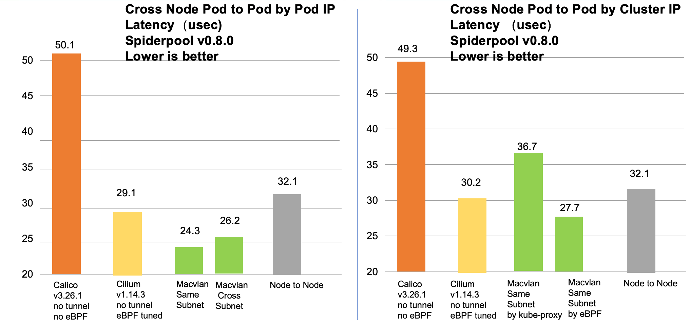
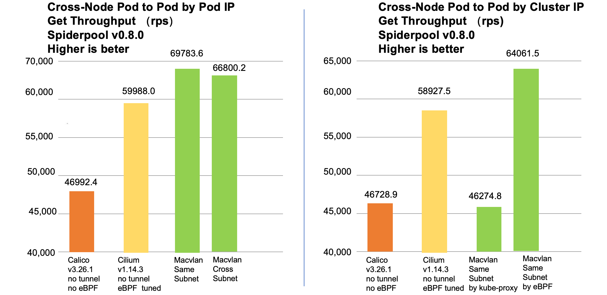

网络 IO 性能
简体中文 | English
Spiderpool 搭配 Macvlan、SR-IOV、IPvlan 可以实现一套完整的网络方案，此文将对比其与市面上主流的网络 CNI 插件（如 cilium，calico） 在多种场景下的网络延时和吞吐量
环境
本次测试包含各种场景的性能基准数据。所有测试均通过在 10 Gbit/s 网络接口的两个不同裸机节点上运行的容器之间执行。
- Kubernetes:
v1.28.2 - container runtime:
containerd 1.6.24 - OS:
ubuntu 23.04 - kernel:
6.2.0-35-generic - NIC:
Mellanox Technologies MT27800 Family [ConnectX-5]
| Node | Role | CPU | Memory |
|---|---|---|---|
| master1 | control-plane, worker | 56C | 125Gi |
| worker1 | worker | 56C | 125Gi |
测试对象
本次测试以 macvlan 搭配 Spiderpool 作为测试方案，并选择了开源社区中的 Calico、Cilium 两种常见的网络方案作为对比，如下是相关的版本等信息：
| 测试对象 | 说明 |
|---|---|
| Spiderpool based macvlan datapath | Spiderpool 版本 v0.8.0 |
| Calico | Calico 版本 v3.26.1，基于 iptables datapath 和无隧道 |
| Cilium | Cilium 版本 v1.14.3，基于全量 eBPF 加速和无隧道 |
sockperf 网络延时测试
Sockperf 是一个网络基准测试工具，可用于测量网络延迟，它允许您通过测试两个端点之间的延迟来评估网络的性能。我们可以通过它来分别测试 Pod 跨节点访问 Pod 和 Service。其中测试访问 Service 的 cluster IP 时，分为 kube-proxy 或者 cilium + kube-proxy replacement 两种场景。
- 以 Pod IP 为目的的跨节点 Pod 延时测试。
通过 sockperf pp --tcp -i <Pod IP> -p 12345 -t 30 测试跨节点 Pod 访问 Pod IP 的延时，数据如下。
| 测试对象 | 延时 |
|---|---|
| 基于 iptables datapath 和无隧道的 Calico | 51.3 usec |
| 基于全量 eBPF 加速和无隧道的 cilium | 29.1 usec |
| 基于 macvlan 的同子网的 Spiderpool Pod | 24.3 usec |
| 基于 macvlan 的跨子网的 Spiderpool Pod | 26.2 usec |
| 节点到节点 | 32.2 usec |
- 以 cluster IP 为目的的跨节点 Pod 延时测试。
通过 sockperf pp --tcp -i <Cluster IP> -p 12345 -t 30 测试跨节点 Pod 访问 cluster IP 的延时，数据如下。
| 测试对象 | 延时 |
|---|---|
| 基于 iptables datapath 和无隧道的 Calico | 51.9 usec |
| 基于全量 eBPF 加速和无隧道的 cilium | 30.2 usec |
| 基于 macvlan 的同子网和 kube-proxy 的 Spiderpool Pod | 36.8 usec |
| 基于 macvlan 的同子网且全量 eBPF 加速的 Spiderpool Pod | 27.7 usec |
| 节点到节点 | 32.2 usec |
netperf 性能测试
netperf 是一种广泛使用的网络性能测试工具，可让您测量网络性能的各个方面，例如吞吐量。我们可以通过 netperf 来分别测试 Pod 跨节点访问 Pod 和 Service 。其中测试访问 Service 的 cluster IP 时，分为 kube-proxy 或者 cilium + kube-proxy replacement 两种场景。
- 以 Pod IP 为目的的跨节点 Pod 的 netperf 测试。
通过 netperf -H <Pod IP> -l 10 -c -t TCP_RR -- -r100,100 测试跨节点 Pod 访问 Pod IP 的吞吐量，数据如下。
| 测试对象 | Throughput (rps) |
|---|---|
| 基于 iptables datapath 和 无隧道 的 Calico | 9985.7 |
| 基于全量 eBPF 加速 和 无隧道 的 cilium | 17571.3 |
| 基于 macvlan 的同子网的 Spiderpool Pod | 19793.9 |
| 基于 macvlan 的跨子网的 Spiderpool Pod | 19215.2 |
| 节点到节点 | 47560.5 |
- 以 cluster IP 为目的的跨节点 Pod 的 netperf 测试。
通过 netperf -H <cluster IP> -l 10 -c -t TCP_RR -- -r100,100 测试跨节点 Pod 访问 cluster IP 的吞吐量，数据如下。
| 测试对象 | Throughput (rps) |
|---|---|
| 基于 iptables datapath 和 无隧道 的 Calico | 9782.2 rps |
| 基于全量 eBPF 加速 和 无隧道 的 cilium | 17236.5 rps |
| 基于 macvlan 的同子网和 kube-proxy 的 Spiderpool Pod | 16002.3 rps |
| 基于 macvlan 的同子网且全量 eBPF 加速的 Spiderpool Pod | 18992.9 rps |
| 节点到节点 | 47560.5 rps |

iperf 网络性能测试
iperf 是一种流行的网络性能测试工具，可让您测量两个端点之间的网络带宽。它广泛用于评估网络连接的带宽和性能。在本章节中，我们通过它分别来测试 Pod 跨节点访问 Pod 和 Service。其中测试访问 Service 的 cluster IP 时，分为 kube-proxy 或者 cilium + kube-proxy replacement 两种场景。
- 以 Pod IP 为目的的跨节点 Pod 的 iperf 测试。
通过 iperf3 -c <Pod IP> -d -P 1 测试跨节点 Pod 访问 Pod IP 的性能，通过 —P 参数分别指定线程为 1，2，4，数据如下。
| 测试对象 | 线程数 1 | 线程数 2 | 线程数 4 |
|---|---|---|---|
| 基于 iptables datapath 和 无隧道 的 Calico | 3.26 Gbits/sec | 4.56 Gbits/sec | 8.05 Gbits/sec |
| 基于全量 eBPF 加速 和 无隧道 的 cilium | 9.35 Gbits/sec | 9.36 Gbits/sec | 9.39 Gbits/sec |
| 基于 macvlan 的同子网的 Spiderpool Pod | 9.36 Gbits/sec | 9.37 Gbits/sec | 9.38 Gbits/sec |
| 基于 macvlan 的跨子网的 Spiderpool Pod | 9.36 Gbits/sec | 9.37 Gbits/sec | 9.38 Gbits/sec |
| 节点到节点 | 9.41 Gbits/sec | 9.40 Gbits/sec | 9.42 Gbits/sec |
- 以 cluster IP 为目的的跨节点 Pod 的 iperf 测试。
通过 iperf3 -c <cluster IP> -d -P 1 测试跨节点 Pod 访问 cluster IP 的性能，通过 —P 参数分别指定线程为 1，2，4，数据如下。
| 测试对象 | 线程数 1 | 线程数 2 | 线程数 4 |
|---|---|---|---|
| 基于 iptables datapath 和 无隧道 的 Calico | 3.06 Gbits/sec | 4.63 Gbits/sec | 8.02 Gbits/sec |
| 基于全量 eBPF 加速 和 无隧道 的 cilium | 9.35 Gbits/sec | 9.35 Gbits/sec | 9.38 Gbits/sec |
| 基于 macvlan 的同子网和 kube-proxy 的 Spiderpool Pod | 3.42 Gbits/sec | 6.75 Gbits/sec | 9.24 Gbits/sec |
| 基于 macvlan 的同子网且全量 eBPF 加速的 Spiderpool Pod | 9.36 Gbits/sec | 9.38 Gbits/sec | 9.39 Gbits/sec |
| 节点到节点 | 9.41 Gbits/sec | 9.40 Gbits/sec | 9.42 Gbits/sec |
redis-benchmark 性能测试
redis-benchmark 旨在通过模拟多个客户端并执行各种 Redis 命令来测量 Redis 服务器的性能和吞吐量。我们通过 redis-benchmark 分别测试 Pod 跨节点访问部署了 Redis 服务的 Pod 和 Service。其中测试访问 Service 的 cluster IP 时，分为 kube-proxy 或者 cilium + kube-proxy replacement 两种场景。
- 以 Pod IP 为目的的跨节点 Pod 的 redis-benchmark 测试。
通过 redis-benchmark -h <Pod IP> -p 6379 -d 1000 -t get,set 测试跨节点 Pod 访问 Pod IP 的性能，数据如下。
| 测试对象 | get | set |
|---|---|---|
| 基于 iptables datapath 和 无隧道 的 Calico | 45682.96 rps | 46992.48 rps |
| 基于全量 eBPF 加速 和 无隧道 的 cilium | 59737.16 rps | 59988.00 rps |
| 基于 macvlan 的同子网的 Spiderpool Pod | 66357.00 rps | 66800.27 rps |
| 基于 macvlan 的跨子网的 Spiderpool Pod | 67444.45 rps | 67783.67 rps |
- 以 cluster IP 为目的的跨节点 Pod 的 redis-benchmark 测试。
通过 redis-benchmark -h <cluster IP> -p 6379 -d 1000 -t get,set 测试跨节点 Pod 访问 cluster IP 的性能，数据如下。
| 测试对象 | get | set |
|---|---|---|
| 基于 iptables datapath 和 无隧道 的 Calico | 46082.95 rps | 46728.97 rps |
| 基于全量 eBPF 加速 和 无隧道 的 cilium | 60496.07 rps | 58927.52 rps |
| 基于 macvlan 的同子网和 kube-proxy 的 Spiderpool Pod | 45578.85 rps | 46274.87 rps |
| 基于 macvlan 的同子网且全量 eBPF 加速的 Spiderpool Pod | 63211.12 rps | 64061.50 rps |

总结
Spiderpool 做为 Underlay 网络解决方案时，其 IO 性能在大部分场景下都领先于 Calico、Cilium。